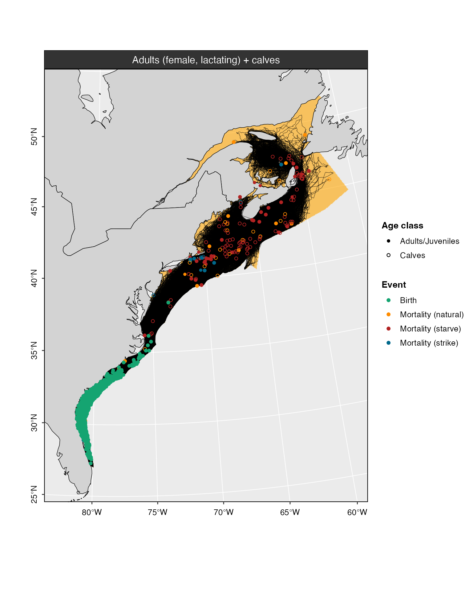
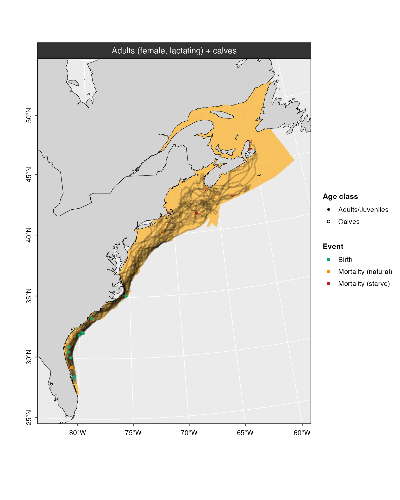

4. Summary and diagnostics
Phil Bouchet, Enrico Pirotta, Catriona Harris, Len Thomas
Centre for Research into Ecological & Environmental Modelling, University of St Andrews2024-04-30
model_summary.RmdPreamble
This tutorial demonstrates how to inspect and summarize outputs from
the agent-based model within the narwind R package.
Viewing data
Outputs from the narw() simulator can be viewed in the R
console using the print() method. print() is
part of a group of generic R functions that can be applied to various R
objects and will behave differently depending on the type of object that
is passed to them. Other generic functions include plot(),
summary(), or write() (among others) – these
are covered in later sections.
print() can also be called ‘implicitly’, that is, by
simply typing the name of the relevant object in the R console and
pressing [Enter] on the keyboard. The default behavior for
objects returned by narw() is to give a tabular overview of
the data from the first 5 days of the simulation, and for the first
animal in each population cohort. For instance, to get a quick overview
of the outputs from the baseline_model created in the
previous tutorial, we can type:
model_baseOptional arguments allow users to override these default settings and
display data for specific days, animals, and/or cohorts, as needed. The
print() method has the following arguments:
| Argument | Default value | Description |
|---|---|---|
obj |
- |
Input model object returned by narw(). |
rowID |
1:5 |
Positive integer or vector of positive integers indicating which days of the simulation should be displayed. Defaults to the first first days. |
whale |
1 |
Positive integer indicating the individual for which data should be extracted. Only the first individual is included by default. |
cohort |
1:6 |
Positive integer or vector of positive integers indicating which
cohorts should be considered. Defaults to all cohorts. Cohort
identifiers are listed in an object called cohorts. Note
that calves are included with their mothers (i.e.,
cohort = 5). |
Given the above, the code below displays the first 5 days of the simulation for the fourth adult male.
print(model_base, rowID = 1:5, whale = 4, cohort = 3)
#>
#>
#>
#> =========================================================================================
#> Adults (male)
#> =========================================================================================
#>
#> --------------------------
#> Locations
#> --------------------------
#>
#> whale day date easting northing region resid_m resid_sd pleave
#> 1: 4 1 01-10 740.5000 776.5000 GOM 20.4 1.1 0
#> 2: 4 2 02-10 738.0150 777.0969 GOM 20.4 1.1 0
#> 3: 4 3 03-10 740.6500 784.3279 GOM 20.4 1.1 0
#> 4: 4 4 04-10 741.8054 782.5409 GOM 20.4 1.1 0
#> 5: 4 5 05-10 741.6727 785.8434 GOM 20.4 1.1 0
#>
#> --------------------------
#> Attributes
#> --------------------------
#> whale day cohort gsl seus alive age bc length length_a
#> 1: 4 1 3 0 0 1 15.89359 0.3942573 13.34207 1362.755
#> 2: 4 2 3 0 0 1 15.89633 0.3944316 13.34221 1362.755
#> 3: 4 3 3 0 0 1 15.89907 0.3944270 13.34235 1362.755
#> 4: 4 4 3 0 0 1 15.90181 0.3945859 13.34248 1362.755
#> 5: 4 5 3 0 0 1 15.90455 0.3947831 13.34262 1362.755
#> length_b length_c mass leanmass fatmass mass_a mass_b mouth_r
#> 1: -0.37 -0.18 28504.63 17266.47 11238.16 -4.834189 2.984353 0.1467477
#> 2: -0.37 -0.18 28513.72 17267.01 11246.72 -4.834189 2.984353 0.1467477
#> 3: -0.37 -0.18 28514.40 17267.55 11246.85 -4.834189 2.984353 0.1467477
#> 4: -0.37 -0.18 28522.77 17268.08 11254.68 -4.834189 2.984353 0.1467477
#> 5: -0.37 -0.18 28532.95 17268.62 11264.33 -4.834189 2.984353 0.1467477
#> mouth_a mouth_w abort starve died date_died p_surv
#> 1: 76.7 1.957917 0 0 0 0 1
#> 2: 76.7 1.957938 0 0 0 0 1
#> 3: 76.7 1.957958 0 0 0 0 1
#> 4: 76.7 1.957979 0 0 0 0 1
#> 5: 76.7 1.957999 0 0 0 0 1
#>
#> --------------------------
#> Stressors
#> --------------------------
#>
#> whale day gear_risk is_entgl entgl_head entgl_sev entgl_d entgl_start
#> 1: 4 1 0 0 0 0 0 0
#> 2: 4 2 0 0 0 0 0 0
#> 3: 4 3 0 0 0 0 0 0
#> 4: 4 4 0 0 0 0 0 0
#> 5: 4 5 0 0 0 0 0 0
#> entgl_end is_entgl_calf entgl_head_calf entgl_sev_calf entgl_d_calf
#> 1: 0 0 0 0 0
#> 2: 0 0 0 0 0
#> 3: 0 0 0 0 0
#> 4: 0 0 0 0 0
#> 5: 0 0 0 0 0
#> entgl_start_calf entgl_end_calf strike_risk strike strike_calf noise_resp
#> 1: 0 0 0 0 0 0
#> 2: 0 0 0 0 0 0
#> 3: 0 0 0 0 0 0
#> 4: 0 0 0 0 0 0
#> 5: 0 0 0 0 0 0
#> noise_lvl dB_thresh
#> 1: 0 0
#> 2: 0 0
#> 3: 0 0
#> 4: 0 0
#> 5: 0 0
#>
#> --------------------------
#> Activity budgets
#> --------------------------
#>
#> whale day d_travel swimspeed glide glide_feed glide_echelon t_travel
#> 1: 4 1 2.555656 0.8316983 0.09532139 0.3179245 0 0.8535601
#> 2: 4 2 7.696048 1.1538667 0.09290994 0.5119930 0 1.8527192
#> 3: 4 3 2.127993 0.5633504 0.08656162 0.3917774 0 1.0492746
#> 4: 4 4 3.305147 1.0732973 0.09643285 0.3520231 0 0.8553981
#> 5: 4 5 3.663948 1.1947665 0.08523470 0.2785317 0 0.8518512
#> t_feed t_rest_nurse
#> 1: 16.19956 6.946884
#> 2: 15.56950 6.577784
#> 3: 16.66407 6.286659
#> 4: 15.86037 7.284232
#> 5: 15.63789 7.510257
#>
#> --------------------------
#> Growth
#> --------------------------
#>
#> whale day delta_fat EDlip EDpro lip_anab lip_catab perc_muscle perc_viscera
#> 1: 4 1 4.912263 39.539 23.64 0.8 0.8 0.5537975 0.2009494
#> 2: 4 2 8.559065 39.539 23.64 0.8 0.8 0.5537975 0.2009494
#> 3: 4 3 0.133245 39.539 23.64 0.8 0.8 0.5537975 0.2009494
#> 4: 4 4 7.833849 39.539 23.64 0.8 0.8 0.5537975 0.2009494
#> 5: 4 5 9.643540 39.539 23.64 0.8 0.8 0.5537975 0.2009494
#> perc_bones
#> 1: 0.2452532
#> 2: 0.2452532
#> 3: 0.2452532
#> 4: 0.2452532
#> 5: 0.2452532
#>
#> --------------------------
#> Energy balance
#> --------------------------
#>
#> whale day E_tot E_in E_out
#> 1: 4 1 242.78246 706.1029 463.3204
#> 2: 4 2 423.02108 940.1171 517.0961
#> 3: 4 3 6.58547 479.3556 472.7701
#> 4: 4 4 387.17821 869.3136 482.1354
#> 5: 4 5 476.61991 951.7746 475.1547
#>
#> --------------------------
#> Energy intake
#> --------------------------
#>
#> whale day feed preyconc minprey gape feedspeed captEff impedance
#> 1: 4 1 1 3.932587 0.4686015 2.521936 0.8316983 0.91575 0
#> 2: 4 2 1 3.932587 0.4686015 2.522014 1.1538667 0.91575 0
#> 3: 4 3 1 3.847692 0.4686015 2.522092 0.5633504 0.91575 0
#> 4: 4 4 1 3.847692 0.4686015 2.522170 1.0732973 0.91575 0
#> 5: 4 5 1 3.847692 0.4686015 2.522249 1.1947665 0.91575 0
#> feed_effort eta_lwrBC eta_upprBC targetBC cop_mass cop_kJ digestEff
#> 1: 0.3365457 10 30 0.3674076 0.001670151 0.02391922 0.94
#> 2: 0.3360340 10 30 0.3674076 0.001670151 0.02391922 0.94
#> 3: 0.3351153 10 30 0.3674076 0.001670151 0.02391922 0.94
#> 4: 0.3351396 10 30 0.3674076 0.001670151 0.02391922 0.94
#> 5: 0.3343043 10 30 0.3674076 0.001670151 0.02391922 0.94
#> metabEff_juv metabEff_ad E_cop
#> 1: 0.7403977 0.875 0.004762958
#> 2: 0.7403977 0.875 0.004762958
#> 3: 0.7403977 0.875 0.004762958
#> 4: 0.7403977 0.875 0.004762958
#> 5: 0.7403977 0.875 0.004762958
#>
#> --------------------------
#> Energetic costs
#> --------------------------
#>
#> whale day E_out rmr LC scalar_LC stroke stroke_feed
#> 1: 4 1 463.3204 442.0439 13.12947 1 0.07724737 0.1687092
#> 2: 4 2 517.0961 442.0532 66.89951 1 0.13665451 0.1674238
#> 3: 4 3 472.7701 442.0626 22.56799 1 0.15996304 0.1622918
#> 4: 4 4 482.1354 442.0720 31.92769 1 0.15489603 0.1666031
#> 5: 4 5 475.1547 442.0813 24.94139 1 0.10646713 0.1722184
#> E_growth
#> 1: 8.147064
#> 2: 8.143301
#> 3: 8.139539
#> 4: 8.135780
#> 5: 8.132021Note 4.1: The
print()method is only used for viewing data inside the R console. To export / save data on disk, use theexport()method (see relevant tutorial).
Model summary and diagnostics
The summary() method provides a range of diagnostics
that are helpful for assessing whether simulated whale behavior aligns
with biological expectations. These relate to individual (1) health, (2)
movements, (3) habitat use, (4) behavior (i.e., activity budgets), (5)
stressor exposure, and (6) energy intake vs. expenditure (see Table 1
below).
The function takes the following arguments:
| Argument | Default value | Description |
|---|---|---|
obj |
- |
Model object of class narwsim, as returned by
narw(). |
what |
"all" |
Character string indicating which component(s) of the summary to
display. Can be one of: "health", "movements",
"habitat", "behavior",
"stressors", "strike", "gear",
"noise", "other", or "energy".
See below for details. Defaults to "all" for a complete
summary. |
relative |
FALSE |
Logical. If TRUE, percentages are calculated relative
to class totals. Defaults to FALSE. |
quintile |
TRUE |
Logical. If TRUE, body condition plots (under the
“health” section) are based on quintiles of the data. |
plot |
FALSE |
Logical. If TRUE, plots are produced in addition to a
text-based summary. |
whale |
1:nsim |
Positive integer indicating the individual for which data should be
extracted. By default, considers all nsim individuals. |
cohort |
1:6 |
Positive integer or vector of positive integers indicating which
cohorts should be considered. Defaults to all cohorts. Cohort
identifiers are listed in an object called cohorts. |
As summaries tend to be long and dense, the what
argument can be used to select subsets of data to show in the R console.
The table below lists the information returned for each possible value
of what.
| Category | Component | Plots | Details |
|---|---|---|---|
health |
Mortality | No | Whale mortality by region, cohort, and cause of death (i.e., starvation vs. vessel strike) . |
| Pregnancy | No | Observed abortion rate in females that started the simulation in a pregnant state. | |
| Births | No | Mean (range) date of calving events. | |
| Body condition | Yes | Time series of individual body condition (expressed as relative fat mass), by cohort. | |
| Growth | Yes | Growth curves, by cohort. | |
movements |
Locations | No | Breakdown of (daily) locations by cohort, region, and country (U.S. vs. Canada). |
| Destinations | No | Comparison of assigned vs. realized migratory destinations both within and across cohorts. Migratory endpoints include the Southeastern United States calving grounds (SEUS) and Canadian feeding grounds in the Gulf of St Lawrence (GSL). | |
| Step lengths | Yes | Summary of daily movements, reported as mean (± SD, range) distances traveled per day, by cohort. Distributions of daily step lengths are also visualized by region and as a whole. | |
| Migration | No | Summary of yearly movements, reported as mean (± SD, range) total distance covered over the time span of the simulation, by cohort. | |
habitat |
Occupancy | No | Cohort-specific summary of the numbers of animals visiting each region, and the number of regions visited by animals. |
| Residency | No | Breakdown of days spent in each. | |
behavior |
Activity budgets | Yes | Mean (± SD) hours spent engaging in each of the four categories of behavior considered in the model (i.e., traveling, resting, nursing, and feeding), by region. A visual breakdown by region is also produced for each category of behavior. |
stressors |
Entanglements (gear) |
Yes | Various summaries by cohort, including: entanglement rates, durations, severities, probabilities, and attachment sites along the body. |
Vessel strikes (strike) |
No | Strike rates by cohort. | |
Noise (noise) |
No | Summary of mean (± SD, range) noise levels encountered, behavioral response thresholds, and numbers of days during which a response to pile-driving was observed. | |
Other sources of mortality (other) |
No | Summary of mortality from other sources, by cohort. | |
| Energy | Energy budget | No | Mean (± SD, range) daily energy intake and expenditure (expressed in MJ/day), by cohort. Also reported are the mean (± SD, range) % time individuals are in energetic deficit (energy balance < 0) or surplus (energy balance > 0). |
Similarly, the cohort argument can be used to only
display data for specific population cohorts. This works based on a
unique cohort ID number, which is an integer between 1 and 6. A list of
cohort IDs is stored in the left-most column of an object called
cohorts, as shown below:
cohorts
#> id name class abb colour
#> 1: 0 Calves (male, female) Calves c(m,f) black
#> 2: 1 Juveniles (male) Juveniles jv(ml) #104E8B
#> 3: 2 Juveniles (female) Juveniles jv(fml) #F69554
#> 4: 3 Adults (male) Adults ad(ml) #22BA9C
#> 5: 4 Adults (female, pregnant) Adults ad(f,p) #84375A
#> 6: 5 Adults (female, lactating) Adults ad(f,l) #EEB422
#> 7: 6 Adults (female, resting) Adults ad(f,r) #942F33Based on this, the code below prints a complete summary (all categories of data listed in the above table) for the cohorts of lactating (ID = 5) females:
# Summary for adult females only
summary(model_base, cohort = 5)
#> -------------------------------------------------------------
#> -------------------------------------------------------------
#>
#> NORTH ATLANTIC RIGHT WHALE (Eubalaena glacialis)
#>
#> *** PCoMS MODEL SUMMARY ***
#>
#> -------------------------------------------------------------
#> -------------------------------------------------------------
#>
#> BOF: Bay of Fundy
#> CCB: Cape Cod Bay
#> CST: Cabot Strait
#> GMAN: Grand Manan Basin
#> GOM: Gulf of Maine and Georges Bank
#> GSL: Gulf of St Lawrence
#> MIDA: Mid-Atlantic
#> SCOS: Scotian Shelf
#> SEUS: Southeastern United States
#> SNE: Southern New England
#>
#> =============================================================
#> SIMULATIONS
#> =============================================================
#>
#> No. animals: 1,000
#>
#> Cohort(s)
#> ----------
#> c(m,f): Calves (male, female)
#> ad(f,l): Adults (female, lactating)
#>
#> Simulation start: October
#>
#> =============================================================
#> HEALTH
#> =============================================================
#>
#> +++++++++++ Mortality +++++++++++
#>
#> cohort alive dead
#> --------------------------- ------------ ------------
#> Adults (female, lactating) 92.1% (921) 7.9% (79)
#> Calves (male, female) 83.0% (830) 17.0% (170)
#>
#> +++++++++++ Mortality (by source) +++++++++++
#>
#> cohort cause_death N
#> -------- ----------------- ----------
#> ad(f,l) starve 3.9% (39)
#> ad(f,l) strike 2.0% (20)
#> ad(f,l) natural 2.0% (20)
#> c(m,f) starve 6.9% (69)
#> c(m,f) natural 2.9% (29)
#> c(m,f) starve (female) 2.5% (25)
#> c(m,f) natural (female) 1.9% (19)
#> c(m,f) strike (female) 1.8% (18)
#> c(m,f) strike 1.0% (10)
#>
#> +++++++++++ Mortality (by region) +++++++++++
#>
#> region cause_death ad(f,l) c(m,f)
#> ------- ------------ ---------- ----------
#> CST natural 0.1% (1) 0.1% (1)
#> GOM natural 0.6% (6) 0.8% (8)
#> GSL natural 0.3% (3) 0.3% (3)
#> MIDA natural 0.1% (1) 0.1% (1)
#> SCOS natural 0.2% (2) 0.1% (1)
#> SEUS natural 0.4% (4) 0.9% (9)
#> SNE natural 0.3% (3) 0.6% (6)
#>
#>
#> region cause_death ad(f,l) c(m,f)
#> ------- ----------------- ---------- ----------
#> CST natural (female) 0.0% (0) 0.1% (1)
#> GOM natural (female) 0.0% (0) 0.6% (6)
#> GSL natural (female) 0.0% (0) 0.3% (3)
#> MIDA natural (female) 0.0% (0) 0.1% (1)
#> SCOS natural (female) 0.0% (0) 0.2% (2)
#> SEUS natural (female) 0.0% (0) 0.4% (4)
#> SNE natural (female) 0.0% (0) 0.2% (2)
#>
#>
#> region cause_death ad(f,l) c(m,f)
#> ------- ------------ ---------- ----------
#> CCB starve 0.1% (1) 0.0% (0)
#> CST starve 1.0% (10) 1.0% (10)
#> GOM starve 0.5% (5) 2.1% (21)
#> GSL starve 0.3% (3) 0.6% (6)
#> MIDA starve 0.0% (0) 0.1% (1)
#> SCOS starve 1.0% (10) 2.6% (26)
#> SNE starve 1.0% (10) 0.5% (5)
#>
#>
#> region cause_death ad(f,l) c(m,f)
#> ------- ---------------- ---------- ----------
#> CST starve (female) 0.0% (0) 0.4% (4)
#> GOM starve (female) 0.0% (0) 0.5% (5)
#> SCOS starve (female) 0.0% (0) 0.9% (9)
#> SNE starve (female) 0.0% (0) 0.7% (7)
#>
#>
#> region cause_death ad(f,l) c(m,f)
#> ------- ------------ ---------- ----------
#> CST strike 0.1% (1) 0.0% (0)
#> GOM strike 0.2% (2) 0.1% (1)
#> GSL strike 0.1% (1) 0.2% (2)
#> MIDA strike 0.4% (4) 0.1% (1)
#> SEUS strike 0.8% (8) 0.3% (3)
#> SNE strike 0.4% (4) 0.3% (3)
#>
#>
#> region cause_death ad(f,l) c(m,f)
#> ------- ---------------- ---------- ----------
#> CST strike (female) 0.0% (0) 0.1% (1)
#> GOM strike (female) 0.0% (0) 0.2% (2)
#> GSL strike (female) 0.0% (0) 0.1% (1)
#> MIDA strike (female) 0.0% (0) 0.4% (4)
#> SEUS strike (female) 0.0% (0) 0.8% (8)
#> SNE strike (female) 0.0% (0) 0.2% (2)
#>
#>
#> +++++++++++ Births +++++++++++
#>
#> No. births: 1000 (100%)
#> DOB: 1 Jan#>
#> =============================================================
#> MOVEMENTS (km)
#> =============================================================
#>
#> +++++++++++ Migratory destinations (by cohort) +++++++++++
#>
#> cohort SEUS reach_not reach
#> -------- ----- ---------- --------------
#> ad(f,l) 0 0.0% (0) 94.6% (946)
#> ad(f,l) 1 0.0% (0) 100.0% (1000)
#>
#>
#> cohort GSL reach_not reach
#> -------- ---- -------------- ------------
#> ad(f,l) 0 105.1% (1051) 13.6% (136)
#> ad(f,l) 1 4.8% (48) 71.1% (711)
#>
#> +++++++++++ Migratory destinations (all individuals) +++++++++++
#>
#> SEUS reach_not reach
#> ----- ---------- --------------
#> 0 0.0% (0) 94.6% (946)
#> 1 0.0% (0) 100.0% (1000)
#>
#>
#> GSL reach_not reach
#> ---- -------------- ------------
#> 0 105.1% (1051) 13.6% (136)
#> 1 4.8% (48) 71.1% (711)
#>
#> +++++++++++ Step lengths and migration distances +++++++++++
#>
#> cohort step migration
#> -------- ----------------------- ------------------------------
#> ad(f,l) 18.9 (±20.9) [0–174.7] 8,521 (±1,065) [1,684–12,424]
#>
#> =============================================================
#> HABITAT USE
#> =============================================================
#>
#> region ad(f,l)
#> ------- ---------------
#> BOF 0.1% (382)
#> CCB 0.1% (231)
#> CST 4.7% (20741)
#> GMAN 0.8% (3588)
#> GOM 21.4% (95008)
#> GSL 9.3% (41381)
#> MIDA 8.5% (37839)
#> SCOS 7.4% (33052)
#> SEUS 23.6% (104960)
#> SNE 24.1% (106925)
#>
#>
#> country ad(f,l)
#> -------- ---------------
#> Canada 22.3% (99144)
#> U.S. 77.7% (344963)
#>
#> +++++++++++ Number of animals visiting each region (N = 1000) +++++++++++
#>
#> region ad(f,l)
#> ------- ------------
#> BOF 2.8% (28)
#> CCB 0.8% (8)
#> CST 55.2% (552)
#> GMAN 12.7% (127)
#> GOM 98.2% (982)
#> GSL 42.5% (425)
#> MIDA 100% (1000)
#> SCOS 94.7% (947)
#> SEUS 100% (1000)
#> SNE 100% (1000)
#>
#> +++++++++++ Days spent in each region +++++++++++
#>
#> region ad(f,l)
#> ------- -----------------------
#> BOF 13.6 (±11.9) [1–63]
#> CCB 28.9 (±43.2) [1–111]
#> CST 37.6 (±15.5) [1–143]
#> GMAN 28.3 (±19.1) [1–95]
#> GOM 96.7 (±50.7) [3–237]
#> GSL 97.4 (±41.6) [1–195]
#> MIDA 37.8 (±10.5) [13–128]
#> SCOS 34.9 (±19.5) [1–109]
#> SEUS 105.6 (±14.6) [66–150]
#> SNE 106.9 (±36.3) [29–315]
#>
#> +++++++++++ Total number of regions visited +++++++++++
#>
#> No.regions ad(f,l)
#> ----------- ------------
#> 3 1.8% (18)
#> 4 3.3% (33)
#> 5 30.1% (301)
#> 6 17.5% (175)
#> 7 45.8% (458)
#> 8 1.3% (13)
#> 9 0.2% (2)
#>
#> =============================================================
#> ACTIVITY BUDGETS
#> =============================================================
#>
#> +++++++++++ Adults (female, lactating) +++++++++++
#>
#> region travel (hrs) rest/nurse (hrs) feed (hrs)
#> ------- -------------- ----------------- --------------
#> SNE 4.69 (±4.05) 12.42 (±6.89) 16.12 (±0.63)
#> MIDA 15.5 (±6.03) 7.67 (±6.15) 7.81 (±5.54)
#> SEUS 11.6 (±5.8) 12.4 (±5.8) 0 (± 0)
#> GOM 3.29 (±2.36) 6.5 (±4.58) 16.11 (±0.63)
#> SCOS 14.33 (±6.48) 1.3 (±3.22) 9 (±5.6)
#> CST 3.19 (±2.35) 7.31 (±5.56) 16.11 (±0.65)
#> GSL 2.69 (±1.57) 5.76 (±3.39) 16.12 (±0.64)
#> GMAN 2.8 (±2.36) 9.21 (±7.02) 16.1 (±0.61)
#> BOF 2.66 (±1.31) 5.34 (±1.93) 16.13 (±0.63)
#> CCB 1.82 (±2.24) 19.13 (±6.84) 16.05 (±0.66)#>
#> =============================================================
#> STRESSORS
#> =============================================================
#>
#> +++++++++++ Entanglements +++++++++++
#>
#> entangled rate
#> ---------- -------------
#> no 90.1% (1802)
#> yes 9.9% (198)
#>
#>
#> position rate
#> --------- ------------
#> body 55.6% (110)
#> head 43.4% (86)
#> head 1% (2)
#>
#>
#> cohort not entangled entangled
#> -------- -------------- ------------
#> ad(f,l) 89.8% (898) 10.2% (102)
#> c(m,f) 90.4% (904) 9.6% (96)
#>
#>
#> cohort No. events per animal p(entangled)
#> -------- ---------------------- ---------------------
#> ad(f,l) 1.04 (±0.2) [1–2] 0 (±0.002) [0–0.272]
#> c(m,f) 1.03 (±0.18) [1–2] NA
#>
#>
#> cohort minor moderate severe
#> -------- ---------- ---------- ---------
#> ad(f,l) 8.3% (83) 1.4% (14) 0.6% (6)
#> c(m,f) 3.0% (30) 6.6% (66) 0.0% (0)
#>
#>
#> cohort minor (days) moderate (days) severe (days)
#> -------- ----------------- ----------------- -----------------
#> ad(f,l) 48 (±36) [1–190] 65 (±49) [8–166] 60 (±54) [5–137]
#> c(m,f) 56 (±50) [1–186] 64 (±43) [1–180] 0 (±0) [0–0]
#>
#>
#> +++++++++++ Vessel strikes +++++++++++
#>
#> strike rate
#> ------- --------------
#> no 197.0% (1970)
#> yes 3.0% (30)
#>
#>
#> cohort not struck struck
#> -------- ------------ ----------
#> ad(f,l) 98.0% (980) 2.0% (20)
#> c(m,f) 99.0% (990) 1.0% (10)
#>
#>
#> cohort p(strike)
#> -------- ----------------------------------
#> ad(f,l) 2.88e-05 (±7.1e-05) [0–0.0037253]
#>
#>
#> +++++++++++ Other sources of mortality +++++++++++
#>
#> mortality rate
#> ---------- -------------
#> alive 97.5% (1950)
#> dead 2.5% (50)
#>
#>
#> cohort alive dead
#> -------- ------------ ----------
#> ad(f,l) 98.0% (980) 2.0% (20)
#> c(m,f) 97.0% (970) 3.0% (30)
#>
#>
#> +++++++++++ Pile-driving noise +++++++++++
#>
#> cohort noise level response threshold response Duration (days)
#> -------- ------------------------ ------------------------ --------- ----------------
#> ad(f,l) 63.427 (±32.422) [0–80] 119.4 (±64.3) [0–199.9] 0.0% (0) 0 (±0) [0–0]
#>
#> =============================================================
#> ENERGY BUDGETS (MJ per day)
#> =============================================================
#>
#> cohort Energy_intake Energy_expenditure
#> -------- ------------------------------ ---------------------------------
#> ad(f,l) 734.1 (±1,340.7) [0–15,091.8] 1,938.8 (±813.6) [428.1–7,276.8]
#> c(m,f) 1,309.1 (±627.2) [0–3,381.6] 519.7 (±134.8) [241.9–2,046.9]
#>
#>
#> cohort Deficit Surplus
#> -------- ------------------------ ------------------------
#> ad(f,l) 81.2% (±9.7) [54.9–100] 18.8% (±9.7) [0–45.1]
#> c(m,f) 16.2% (±18) [0.3–61.3] 83.8% (±18) [38.7–99.7]Plotting model outputs
Several plots can be obtained from the outputs of the agent-based
model – all are produced using the plot() method, which
takes the following arguments:
| Argument | Default value | Description |
|---|---|---|
obj |
- |
Model object of class narwsim, as returned by
narw(). |
what |
"map" |
Character string indicating which plots to return. |
whale |
1:nsim |
Positive integer or vector of integers indicating the individual(s)
for which data should be extracted. By default, the function plots
tracks for all nsim simulated animals. |
cohort |
1:6 |
Positive integer or vector of positive integers indicating which
cohorts should be considered. Defaults to all cohorts. Cohort
identifiers are listed in an object called cohorts. |
web |
FALSE |
Logical. Whether to produce static maps (FALSE) or
interactive, web-based maps (TRUE). |
nL |
100 |
Positive integer. Number of tracks to plot (when
what = "map") or number of draws to plot from the Bayesian
posterior distribution of survival, health, and gestation models (when
what = "pred"). In the former case, this argument should be
kept < 100 to minimize memory usage and avoid lengthy run times. |
lwd |
0.2 |
Numeric value. Thickness of the lines used to illustrate movement tracks. |
alpha |
0.7 |
Numeric value between 0 and 1. Level of transparency of the tracks. |
Plot type
By default, a call to plot() will automatically generate
maps of simulated whale tracks, with labels indicating the locations of
births (in green, if relevant) and deaths (color-coded by cause of
mortality). This behavior is controlled by the what
argument, which is preset to "map". what may
also be set to "pred" to visualize how survival and body
condition are predicted to vary as a function of individual health (see
next Tutorial 5).
Number of tracks
The number of tracks shown is limited to a maximum of
nL = 100 to improve legibility and ensure that the code
runs smoothly. We recommend against modifying this default setting,
unless absolutely necessary (i.e., fewer/more tracks can be displayed by
decreasing or increasing value passed to the nL
argument).
Subsets of data
Similarly to the other methods described in preceding sections, the
cohort and whale arguments can be used to
display data for particular cohorts and/or individuals of interest.
plot(model_base, cohort = 5)
#> Warning in plot.narwsim(model_base, cohort = 5): Plotting only the first 100
#> tracks
Plot aesthetics
The thickness and transparency of track lines can be changed via the
lwd and alpha arguments, respectively. Lower
values of lwd produce thinner lines, and lower values of
alpha increase transparency.
plot(model_base, cohort = 5, whale = 1:10, alpha = 0.2, lwd = 1)
Interactive maps
Lastly, when web is set to TRUE,
interactive web-based maps are produced using the ggplotly R package.
These can be zoomed and panned using the mouse cursor to get a closer
look at specific areas of interest. The location (easting, northing) and
ID of each animal are displayed upon mouse hover.